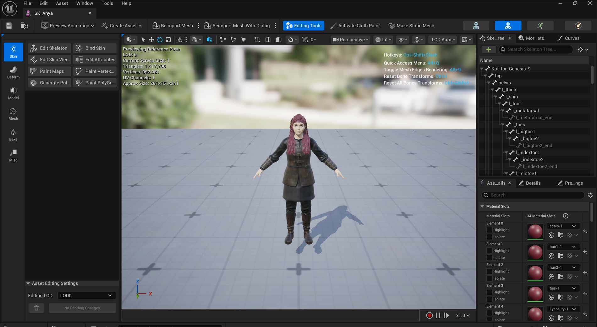

🧿 Retargeting with the IK Retargeter
Lesson 1 ended with the single most valuable idea in production animation: retargeting, the trick that lets one library of motion drive characters that were never built for it. It showed you why retargeting has to exist, using two real characters in one project whose bones are named nothing alike. This lesson walks the how. You will build an IK Rig for each character, fix the retarget pose so the two skeletons agree on what "standing still" looks like, wire up an IK Retargeter that maps one rig's chains onto the other's, and export a mannequin walk cycle onto a Daz figure whose bones it has never heard of.
🎬 Intermediate Track · Deep Dive
This is a deep-dive companion to the Cinematic Production track. The three core lessons (Characters & Animation, Cinematics with Sequencer, Rendering Output) take a character from import to final frames. Lesson 1 introduced retargeting as the payoff idea; this lesson is where you actually do it, step by step. It is the hands-on version of the Phase 4 Animation & Retargeting pipeline page.
🎯 Learning Objectives
By the end of this lesson, you will be able to:
- Explain why animation cannot transfer between skeletons with different bone names and proportions
- Build an IK Rig: set a retarget root and define retarget chains for the spine, arms, and legs
- Fix the retarget pose so a source and target skeleton share the same reference stance
- Create an IK Retargeter, assign source and target rigs, and map chain to chain
- Export a retargeted clip to a new Animation Sequence, and batch a whole library at once
- Recognize and fix the common retargeting failures: twisted limbs, sliding feet, and a T-pose result
Estimated Time: 40-50 minutes
Prerequisites: Intermediate Lesson 1: Characters & Animation (Skeletons, bone hierarchies, and the retargeting problem). A working Unreal Engine 5.8 project with two different characters, for example an Epic mannequin and any Fab, Mixamo, or Daz-derived Skeletal Mesh.
In This Lesson
Why Retargeting Has to Exist
Animation in Unreal is never truly generic. Every Animation Sequence is authored for one specific Skeleton, and it stores its motion as rotations on bones addressed by name. A walk cycle does not say "rotate the upper arm." It says "on frame 12, set upperarm_l to this rotation." Hand that clip to a Skeleton with no bone called upperarm_l and there is simply nothing for the data to land on.
That is the exact situation Lesson 1 set up with two real characters living in one project. The Kat figure (SK_Anya) came from Daz, so it carries Daz-style bone names on its own SK_Anya_Skeleton. Unreal's standard mannequin (SK_Manny) uses Epic's names on SK_Mannequin. Here is the real bone tree of the Daz character again, so the names are concrete:

Figure: The real bone tree of the Daz-derived SK_Anya in the ClaudeTest project (the same capture you met in Lesson 1). The root is literally Kat-for-Genesis-9, and the joints read hip, pelvis, l_thigh, l_shin · a mannequin animation looking for pelvis/thigh_l/calf_l will not find these.
The name clash is only half the trouble. Even if you renamed every bone to match, the two bodies are built to different proportions: Kat is a different height, her arms and legs are different lengths, her shoulders sit at a different width. Copy a mannequin's raw bone rotations onto her and her hands would punch through her hips or float away from her sides. Real retargeting has to solve both problems at once, remapping names and re-fitting the motion to the target's proportions.
💡 The one-sentence version
Retargeting translates an animation from the skeleton it was made for onto a different skeleton, matching which bone is which and how long each bone is, so the motion reads correctly on a body it was never authored for.
The Two-Asset System: IK Rig and IK Retargeter
Unreal solves retargeting with two cooperating assets. It is worth being precise about which one does what, because their names sound similar and beginners routinely confuse them.
📖 Definition
IK Rig: a per-character asset that describes a Skeleton. It marks a retarget root (usually the pelvis) and groups bones into named retarget chains like "LeftArm" or "Spine." One IK Rig per character. IK Retargeter: a pairing asset that connects a source IK Rig to a target IK Rig and maps the source's chains onto the target's, then transfers animation between them.
The division of labor is clean. Each IK Rig speaks only about its own character: "on this skeleton, the left arm is these three bones." The IK Retargeter is the bilingual translator that sits between two rigs and says "the thing your source calls LeftArm is the thing your target calls LeftArm, so route the motion accordingly." You build the rigs once per character; you build a retargeter once per source-and-target pair.
Figure: The retargeting system. Each character gets one IK Rig that labels its retarget root and chains in a shared vocabulary (Spine, LeftArm, LeftLeg…) · the single IK Retargeter in the middle pairs a source rig with a target rig and matches chains by that shared name, regardless of the underlying bone names.
Because both rigs describe themselves with the same chain vocabulary, the retargeter never has to know that one skeleton says upperarm_l and the other says l_upperarm. It only sees "LeftArm on the source" and "LeftArm on the target," and connects them. That shared vocabulary is the whole trick, and building it is the job of the IK Rig.
💡 The end-to-end workflow
flowchart LR
A[Build IK Rig
on source] --> C[Create IK Retargeter]
B[Build IK Rig
on target] --> C
C --> D[Map chains
source to target]
D --> E[Fix retarget pose
align stances]
E --> F[Preview an anim
on the target]
F --> G[Export to a new
Animation Sequence]
style C fill:#fff3cd,stroke:#ffc107
style G fill:#e8f5e9,stroke:#4CAF50
Two rigs feed one retargeter; the retargeter maps chains, you correct the pose, preview, and export. The rest of this lesson is these boxes, one at a time.
Building an IK Rig: Root and Chains
An IK Rig is created from a Skeletal Mesh (right-click the mesh, Create → IK Rig) and opened in its own editor, where the character stands next to its Skeleton hierarchy. Setting it up for retargeting is two jobs: naming the root, and drawing the chains.
The retarget root
The retarget root is the single bone that carries the character's overall position and facing in the world, almost always the pelvis or hip. It is special because it is the one bone whose translation retargets, not just its rotation: it is what moves the whole body forward during a walk. Get this wrong and your character will animate its limbs correctly but slide around, or stay pinned to the origin. On the mannequin the retarget root is pelvis; on Kat it is hip.
Retarget chains
A retarget chain is a named run of bones from a start joint to an end joint that represents one limb or region. You define one chain per body part and give it a standard name. The names are what the retargeter matches on, so using consistent names (Epic's own conventions like Spine, LeftArm, RightLeg, Head) is what makes the pairing in the next asset automatic.
Figure: An IK Rig on the Daz character. The hip bone is set as the retarget root (red), and the limbs are grouped into named chains · note the chains carry standard names (LeftArm, RightLeg, Spine) even though the bones inside them use Daz names like l_upperarm and r_thigh.
Epic ships a ready-made IK Rig for its mannequin (IK_Mannequin) with all of these chains already defined, so for the mannequin side you usually reuse it rather than build one. For a Daz or Mixamo character you build the rig yourself: create it from the mesh, set the root, then add one chain per limb by picking its start and end bone and typing the standard name. A humanoid needs about eight chains: Spine, Head, two arms, two legs, and often the two clavicles.
⚠️ Watch out: chain names must match across rigs
The retargeter pairs chains by name. If your source rig calls the arm LeftArm and your target rig calls it Arm_L, they will not auto-pair and that limb will not move. Pick one naming convention (Epic's is the safe default) and use the identical spelling on every rig. This is the single most common reason a limb "does nothing" after retargeting.
The Retarget Pose: Making Skeletons Agree
Here is the step beginners skip, and it is the one that causes the ugliest results. Retargeting compares the source's motion against a reference pose and applies the difference to the target's reference pose. For that comparison to make sense, the two reference poses have to describe the same stance. If the mannequin's reference pose is a wide-armed T-pose and your Daz character's is a relaxed A-pose with arms down, the retargeter thinks the source is holding its arms 45 degrees higher than it really is, and every retargeted clip inherits that twist.
📖 Definition
Retarget pose: a per-rig reference stance the IK Retargeter uses as the "zero" it measures motion against. When source and target reference poses differ (T-pose versus A-pose), you edit the retarget pose on one side inside the IK Retargeter so both characters strike the same stance before any animation is applied.
You fix this directly in the IK Retargeter editor, which shows both characters side by side. You select the target, switch to Edit Retarget Pose, and rotate its arms (or legs, or spine) until its stance matches the source's. You are not animating anything; you are correcting the two skeletons' idea of "neutral" so they line up. Once the poses agree, the actual motion transfers cleanly.
Figure: Why the retarget pose matters. On the left the source stands in a T-pose while the target rests in an A-pose, so the retargeter bakes a 45 degree arm twist into every clip · on the right the retarget pose has been edited so both characters share the same neutral stance, and the animation transfers without distortion.
✅ Pro Tip: match poses, then judge the motion
When a retarget looks "almost right but subtly wrong" (elbows bent, feet splayed, a slight hunch), your first suspect should always be the retarget pose, not the chains. Fixing the neutral stance corrects the whole library at once. Only after the poses agree is it worth fine-tuning individual chain settings.
The IK Retargeter: Map, Preview, Export
With a rig on each character, you create the IK Retargeter (right-click the source IK Rig, Create → IK Retargeter, then assign the target IK Rig). Its editor is where everything comes together: source on the left, target on the right, a shared timeline, and a chain-mapping panel.
Chain mapping
The retargeter auto-pairs chains whose names match, so if you used consistent names in Section 3, the mapping panel is already mostly filled in: Spine to Spine, LeftArm to LeftArm, and so on. You scan the list, fix any chain that did not pair, and leave anything you do not want transferred unmapped (a common choice for finger chains on a clip that has no finger motion).
💡 Chains pair by name, across different bone names
flowchart LR
subgraph SRC[Source: Mannequin]
S1[Spine
spine_01..05]
S2[LeftArm
upperarm_l..hand_l]
S3[LeftLeg
thigh_l..foot_l]
end
subgraph TGT[Target: Kat]
T1[Spine
spine1..4]
T2[LeftArm
l_upperarm..l_hand]
T3[LeftLeg
l_thigh..l_foot]
end
S1 --> T1
S2 --> T2
S3 --> T3
style SRC fill:#e6faf7,stroke:#4fd1c5
style TGT fill:#fdf3e0,stroke:#e9c07a
The arrows are chain-name matches. Inside each box the real bone names differ completely (upperarm_l versus l_upperarm), but the retargeter never looks at those · it only connects LeftArm to LeftArm.
Preview, then export
Load any Animation Sequence that belongs to the source skeleton and the target character immediately performs it in the preview, retargeted live. This is where you catch problems: sliding feet, popping, an arm clipping the body. You tune the retarget pose or a chain's settings until it reads correctly. But a live preview is not an asset yet. To get something you can drop into a game or a Sequencer shot, you export.
Exporting has two flavors, and choosing between them is a real design decision:
Two ways to use a retarget
- Export to Animation Sequence (bake). The retargeter writes a brand-new Animation Sequence authored for the target skeleton. It is a normal clip from then on, with no runtime cost and no dependency on the retargeter. You can select many source clips and batch export an entire library in one pass. This is what you want for cinematics and for a fixed set of clips.
- Retarget at runtime. A Retarget Pose From Mesh node in an Anim Blueprint (or a live retarget component) runs the retargeter every frame, so the target always mirrors a source animation without baking. Useful when the source animation is chosen dynamically at play time, at a small per-frame cost.
💡 Bake for a library, retarget live for dynamic motion
flowchart TD
R[IK Retargeter
source to target] --> Q{How will you
use it?}
Q -->|Fixed set of clips,
cinematics| BAKE[Batch export to
Animation Sequences]
Q -->|Chosen at runtime,
gameplay| LIVE[Retarget Pose From Mesh
in an Anim Blueprint]
BAKE --> LIB[A retargeted library
on the target skeleton]
style BAKE fill:#e8f5e9,stroke:#4CAF50
style LIVE fill:#fff3cd,stroke:#ffc107
For this track's cinematic work you almost always bake: batch-export the walks, idles, and gestures you need onto the target, then treat them as ordinary clips in Sequencer.
⚠️ Sliding or floating feet? Check the root and IK
Two classic export bugs. Feet that slide usually mean the retarget root (pelvis) motion is scaled wrong for the target's leg length; the IK Retargeter has per-chain and root settings to correct stride. Feet that float or sink mean the foot IK is not planting; enabling IK on the leg chains locks the feet to the ground plane. Both are fixed in the retargeter, not by re-exporting from the source.
Hands-On: Retarget a Walk
You need two different characters in one project. The easiest pairing is Epic's mannequin (which arrives with a finished IK Rig and a library of walks and idles) plus any second character: a free Mixamo download, a Fab character, or a Daz-derived mesh like the one in this lesson. You will move one of the mannequin's walks onto that second character.
🧿 Exercise: a mannequin walk on a new body
- Get the source rig for free. Add the Third Person feature so you have
SK_Mannyand its ready-madeIK_Mannequinrig plus a walk animation. - Build the target rig. Right-click your second character's Skeletal Mesh, choose Create → IK Rig. Set the pelvis or hip as the retarget root, then add chains for Spine, Head, both arms, and both legs, using Epic's standard chain names.
- Create the retargeter. Right-click
IK_Mannequin, choose Create → IK Retargeter, and assign your new rig as the target. - Check the mapping. In the chain-mapping panel, confirm every chain paired by name. Fix any that did not, and leave finger chains unmapped if the walk has no finger motion.
- Fix the retarget pose. If the two characters rest in different stances, select the target, choose Edit Retarget Pose, and rotate its arms and legs until its neutral stance matches the mannequin's.
- Preview and export. Load the mannequin's walk; watch your character walk. When it reads correctly, use Export Selected Animations to bake a new Animation Sequence on the target skeleton.
💡 Hint: a limb does not move at all?
That is almost always an unmapped or misnamed chain. Open the chain-mapping panel and look for the limb's row: if the target column is blank, the names did not match. Either rename the chain in the target IK Rig to match the source, or set the mapping by hand in the panel. A chain that maps correctly but looks twisted is a retarget-pose problem instead, not a mapping one.
✅ Reach exercise: batch a whole library
Once one walk retargets cleanly, the payoff is scale. In the export dialog, select every mannequin animation at once (walks, runs, idles, turns) and batch-export them all onto your target in a single pass. In one operation your new character gains the mannequin's entire motion library, which is exactly why studios standardize on one skeleton and retarget everything to it.
Knowledge Check
Question 1
Why can't an Animation Sequence made for one skeleton simply play on a different one?
Correct answer: B · A sequence keyframes named bones like upperarm_l. A skeleton without that bone has nothing to receive the data, and even matching names would not fit a body of different proportions. Retargeting solves both.
Question 2
What is the division of labor between the IK Rig and the IK Retargeter?
Correct answer: A · You build one IK Rig per character to label its retarget root and chains. A single IK Retargeter then connects a source rig to a target rig, maps chain to chain, and moves animation across.
Question 3
What is the retarget root, and why is it special?
Correct answer: B · The retarget root is normally the pelvis or hip. It is the one bone whose translation is retargeted, so it moves the whole body forward. Choosing it wrong makes the character slide or stay pinned in place.
Question 4
A retargeted clip looks almost right, but the character's arms are subtly twisted in every animation. What is the most likely cause?
Correct answer: A · The retargeter measures motion against each rig's reference stance. If one rests in a T-pose and the other in an A-pose, that constant offset is baked into every clip. Editing the retarget pose so both stances match fixes the whole library at once.
Question 5
You want a fixed set of retargeted walks and idles to use in a Sequencer cinematic, with no per-frame cost. What do you do?
Correct answer: B · Exporting bakes brand-new Animation Sequences authored for the target, with no runtime dependency on the retargeter. You can select many source clips and batch-export a whole library in one pass. Runtime retargeting (the Anim Blueprint node) is for motion chosen dynamically at play time.
Summary
You turned Lesson 1's idea into a working pipeline. Here is the arc:
The problem. Animation is stored on named bones, authored for one skeleton. A different character has different bone names and different proportions, so a clip cannot transfer directly. Retargeting fixes both the names and the fit.
Two assets. An IK Rig describes one character by marking a retarget root (the pelvis or hip) and grouping bones into named retarget chains. An IK Retargeter pairs a source rig with a target rig and maps chains by name, so it never has to know the underlying bone names differ.
The pose and the export. Before motion transfers cleanly, the two rigs' retarget poses must describe the same stance, or a constant offset twists every clip. Once aligned, you preview, then either batch-export baked Animation Sequences for a fixed library or retarget live in an Anim Blueprint for dynamic motion.
🔑 Key Takeaways
- Animation cannot cross skeletons directly because it targets bones by name and assumes fixed proportions
- An IK Rig labels one character: a retarget root plus named retarget chains (Spine, LeftArm, LeftLeg…)
- An IK Retargeter pairs two rigs and maps chains by name, ignoring the differing bone names inside them
- The retarget pose aligns both skeletons' neutral stances; a T-pose versus A-pose mismatch twists every clip
- Bake to Animation Sequences (and batch a whole library) for cinematics; retarget at runtime for dynamic gameplay motion
👆 A note on this lesson's figures
The bone-tree image is a genuine capture of the real SK_Anya Skeletal Mesh editor in the ClaudeTest project, showing its actual Daz bone names. The chain, pose, and mapping diagrams are labeled illustrations: the IK Rig and IK Retargeter editors are dual-skeleton asset editors that the project's automation bridge cannot capture directly, so their concepts are drawn rather than screenshotted. The bone names, chain names, and retarget-root choices shown are the real ones for these two characters.
Where this fits
Retargeting is the step that fills the animation library the rest of the track draws on. With clips retargeted onto your character, Cinematics with Sequencer is where you drop them into a shot and point a camera, and Rendering Output turns that shot into final frames. In the wider Story-to-Screen pipeline, this is Phase 4, sitting between character finalization and shot assembly.